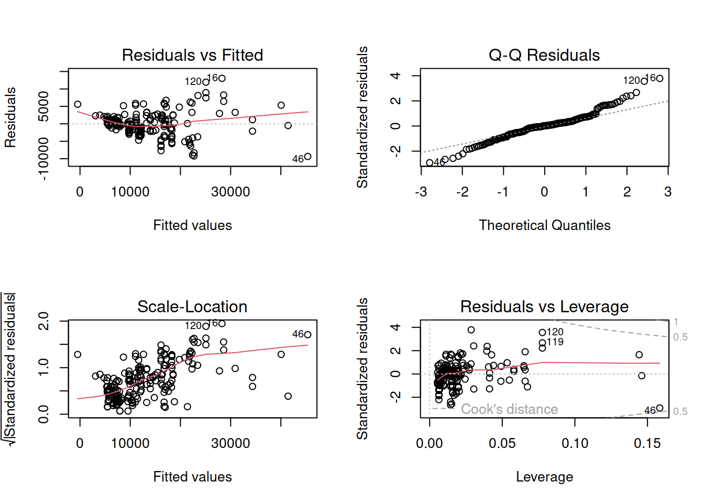
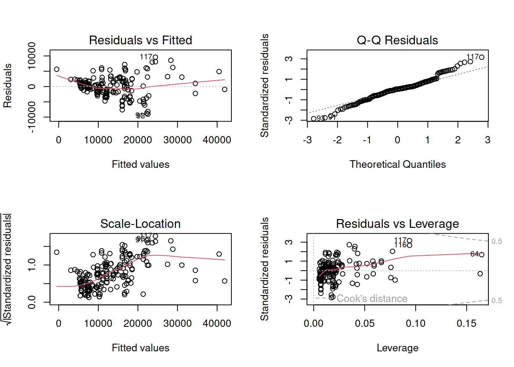
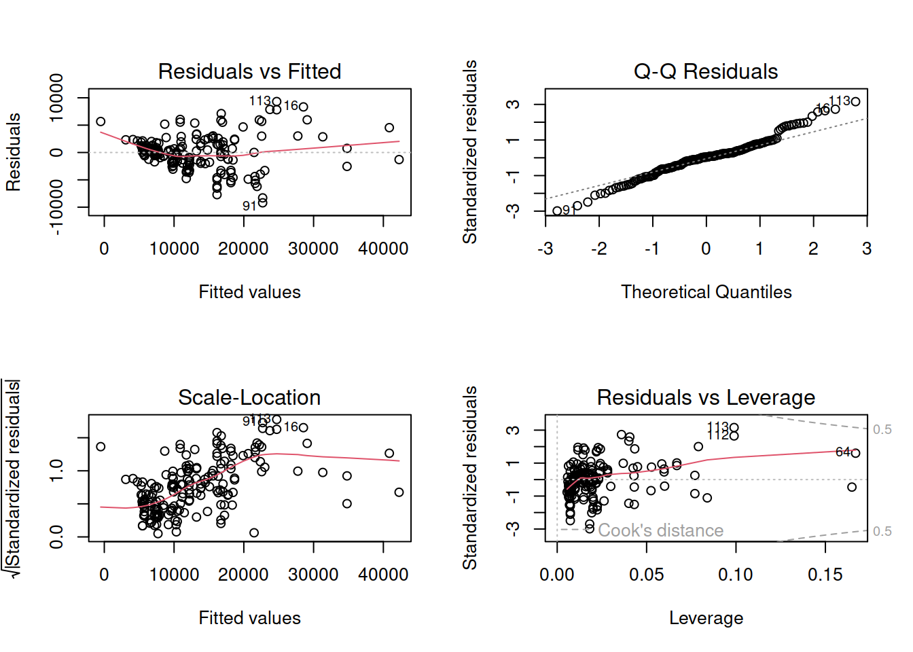
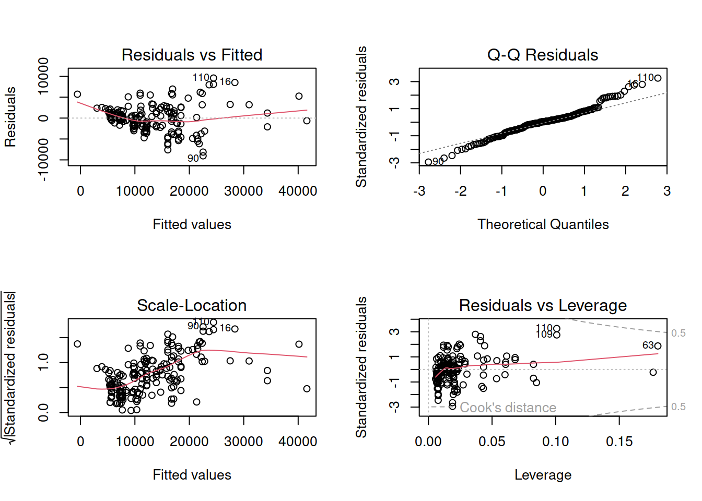
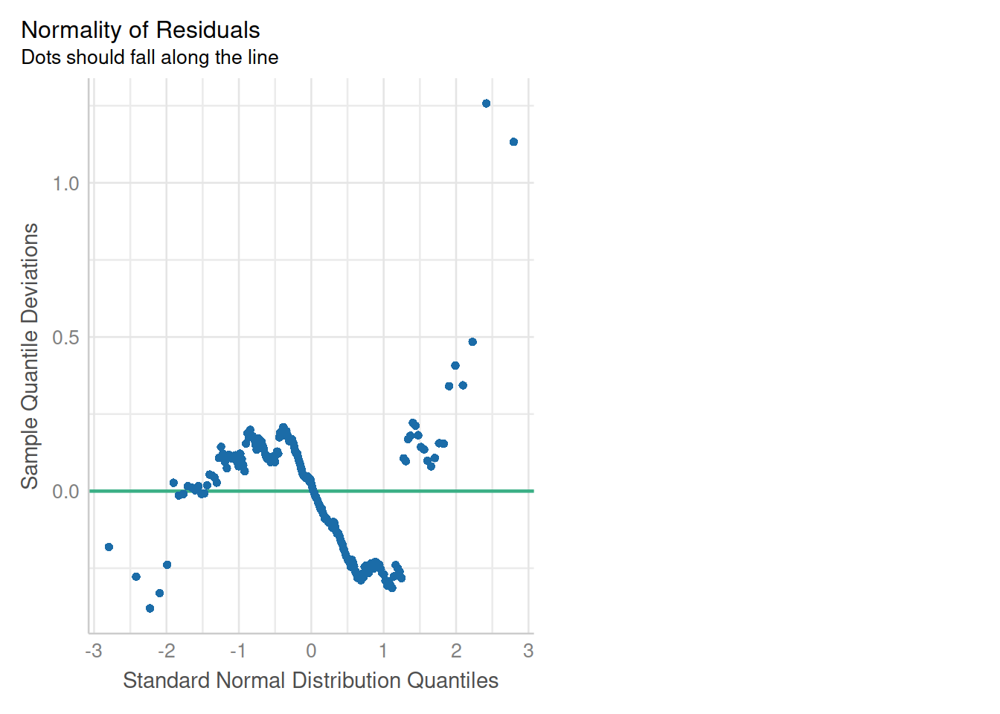
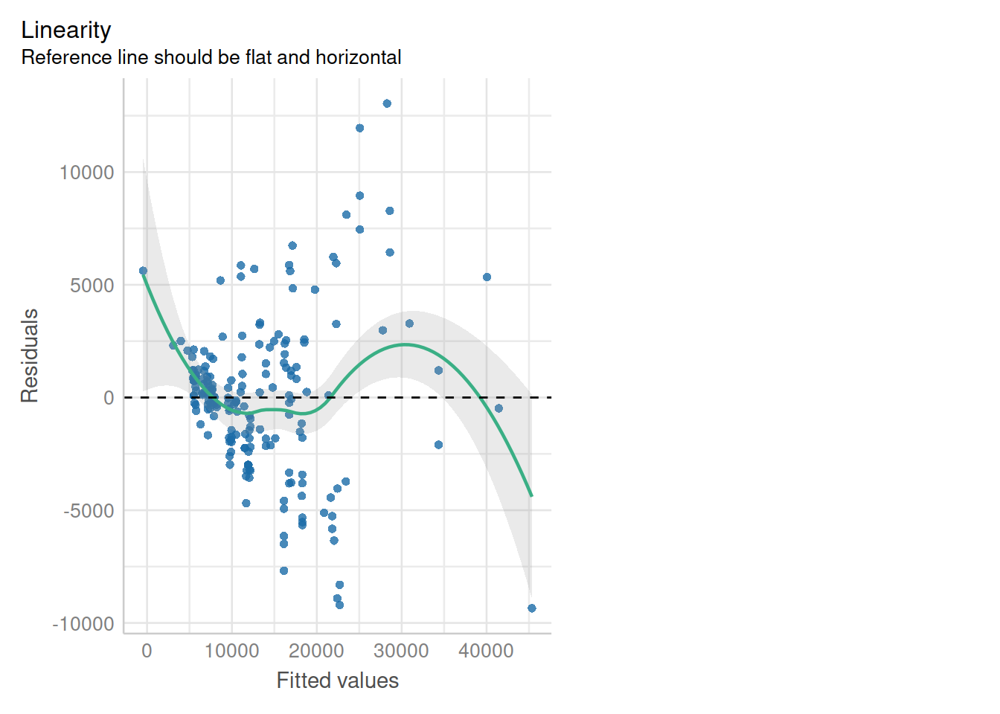
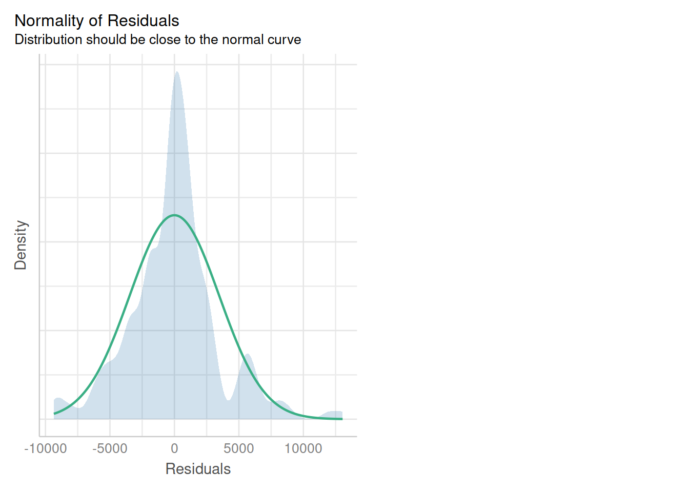
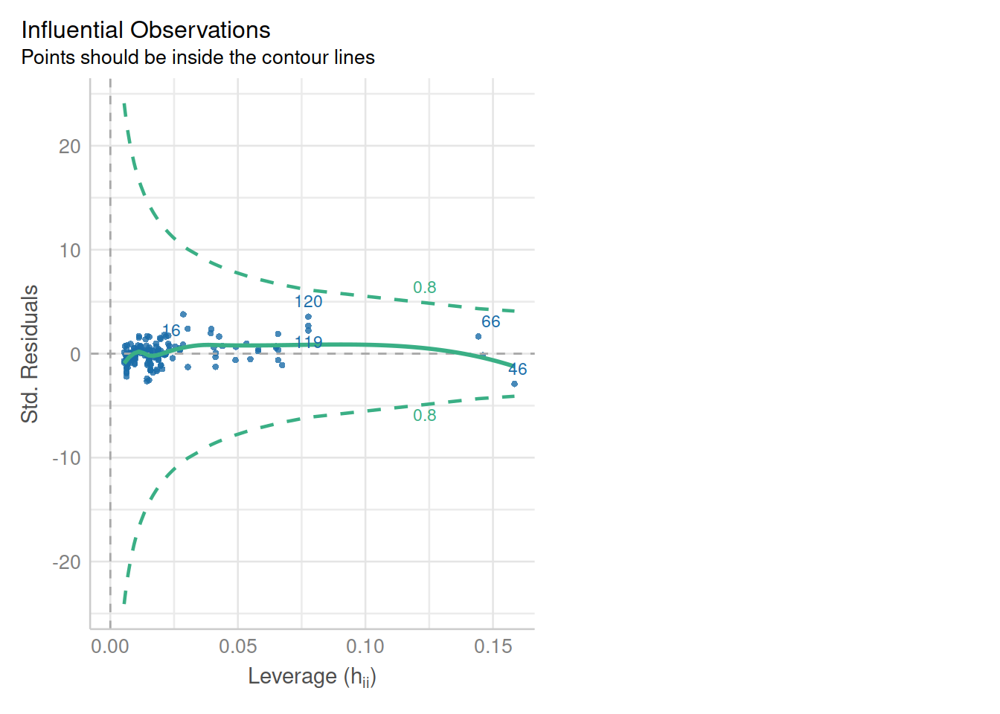
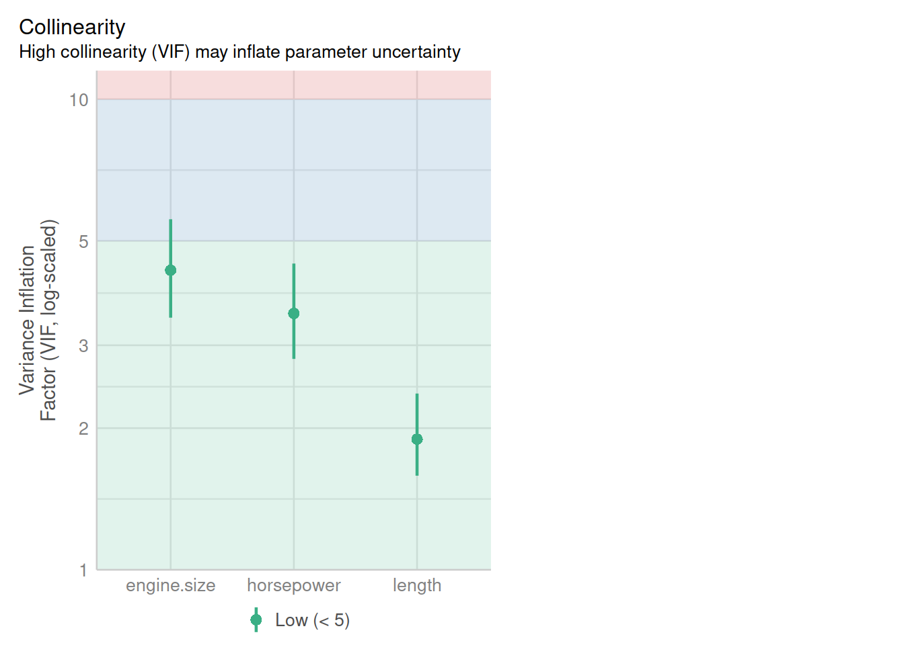

Call:
lm(formula = price ~ horsepower + length + engine.size + city.mpg,
data = autos)
Residuals:
Min 1Q Median 3Q Max
-9697.0 -1745.7 24.9 1389.4 12904.6
Coefficients:
Estimate Std. Error t value Pr(>|t|)
(Intercept) -28480.00 7114.51 -4.003 8.99e-05 ***
horsepower 52.74 16.62 3.174 0.001756 **
length 114.58 32.30 3.548 0.000491 ***
engine.size 115.32 12.92 8.922 4.06e-16 ***
city.mpg 61.51 83.05 0.741 0.459849
---
Signif. codes: 0 '***' 0.001 '**' 0.01 '*' 0.05 '.' 0.1 ' ' 1
Residual standard error: 3499 on 188 degrees of freedom
Multiple R-squared: 0.8168, Adjusted R-squared: 0.8129
F-statistic: 209.5 on 4 and 188 DF, p-value: < 2.2e-16Análise de Modelos de Regressão Linear
como as variáveis que utilizaremos não precisam de ajustes, vamos direto ao modelo
A variável city.mpg não tem significância estatística no nosso modelo, então vamos removê-la e atualizar o modelo.
Call:
lm(formula = price ~ horsepower + length + engine.size, data = autos)
Residuals:
Min 1Q Median 3Q Max
-9351.8 -1808.5 87.3 1351.9 13043.5
Coefficients:
Estimate Std. Error t value Pr(>|t|)
(Intercept) -24227.12 4195.20 -5.775 3.12e-08 ***
horsepower 44.60 12.44 3.585 0.000429 ***
length 102.48 27.83 3.683 0.000301 ***
engine.size 117.33 12.62 9.296 < 2e-16 ***
---
Signif. codes: 0 '***' 0.001 '**' 0.01 '*' 0.05 '.' 0.1 ' ' 1
Residual standard error: 3495 on 189 degrees of freedom
Multiple R-squared: 0.8162, Adjusted R-squared: 0.8133
F-statistic: 279.8 on 3 and 189 DF, p-value: < 2.2e-16Agora todas as variáveis tem significância estatística, e nosso modelo consegue explicar aproximadamente 81.3% da variabilidade da variável alvo, price.
Próxima etapa, os gráficos diagnósticos.

Os gráficos diagnósticos não estão tão fáceis de interpretar; então podemos utilizar pacotes do R específicos para isso. Um destes pacotes é o lmtest.
Usando o pacote lmtest para avaliar o modelo
Vamos utilizar a função bptest que executa o teste de Breusch-Pagan, que ajusta um modelo linear de regressão aos resíduos de um modelo de regressão linear (por default as mesmas variáveis explicativas são utilizadas como no modelo principal de regressão) e rejeita se muito da variância é explicada pelas variáveis explanatórias adicionais.
A hipótese nula do teste é que o modelo tem variância constante, ou seja, é um teste de homocedasticidade do nosso modelo.
studentized Breusch-Pagan test
data: modtr05p1a
BP = 67.363, df = 3, p-value = 1.566e-14Por este teste, temos que rejeitar a hipótese nula de que o modelo tem variância constante.
Usando o pacote olsrr
O pacote olsrr oferece algumas ferramentas para detectar violações das hipóteses padrão da regressão. Vamos examinar apenas algumas funcionalidades, neste caso, o diagnóstico dos resíduos. As hipóteses padrão da regressão incluem as seguintes premissas sobre os resíduos/erros:
- O erro tem uma distribuição normal (hipótese de normalidade)
- O erro tem média zero.
- Os erros tem variância constante (mas desconhecida) – hipótese de homocedasticidade.
- Os erros são independentes uns dos outros (hipótese de erros independentes).
Testes para detectar a violação da hipótese de normalidade
-----------------------------------------------
Test Statistic pvalue
-----------------------------------------------
Shapiro-Wilk 0.9625 1e-04
Kolmogorov-Smirnov 0.1023 0.0353
Cramer-von Mises 16.1468 0.0000
Anderson-Darling 2.5759 0.0000
-----------------------------------------------Pelos resultados dos testes acima, todos os p-values estão na região de rejeição da hipótese nula, ou seja, os resíduos não seguem uma distribuição normal.
Usando o pacote gvlma
O pacote gvlma é uma implementação do artigo de Pena & Slate called “Global Validation of Linear Model Assumptions” e nos permite verificar rapidamente por:
- Linearidade – o teste Global Stat testa a hipótese nula de que nosso modelo é uma combinação linear das preditoras.
- Heterocedasticidade – o teste correspondente testa a hipótese nula de que a variância dos nossos resíduos é relativamente constante.
- Normalidade – testa distorções na distribuição dos resíduos ( skewness e curtose ), para entendermos se os resíduos do modelo seguem uma distribuição normal. Se a hipótese nula é rejeitada, provavelmente é necessária uma transformação nos dados (p.explo, uma transformação log). Podemos observar isso visualmente no QQ-Plot.
- Link Function – testa se nossa variável dependente é realmente contínua, ou categórica. Se a hipótese nula é rejeitada (
p-value< 0.05), é uma indicação de que deveríamos utilizar uma forma alternativa do modelo linear generalizado (p.explo, Regressão Logística ou Binomial, etc).
Call:
lm(formula = price ~ horsepower + length + engine.size, data = autos)
Residuals:
Min 1Q Median 3Q Max
-9351.8 -1808.5 87.3 1351.9 13043.5
Coefficients:
Estimate Std. Error t value Pr(>|t|)
(Intercept) -24227.12 4195.20 -5.775 3.12e-08 ***
horsepower 44.60 12.44 3.585 0.000429 ***
length 102.48 27.83 3.683 0.000301 ***
engine.size 117.33 12.62 9.296 < 2e-16 ***
---
Signif. codes: 0 '***' 0.001 '**' 0.01 '*' 0.05 '.' 0.1 ' ' 1
Residual standard error: 3495 on 189 degrees of freedom
Multiple R-squared: 0.8162, Adjusted R-squared: 0.8133
F-statistic: 279.8 on 3 and 189 DF, p-value: < 2.2e-16
ASSESSMENT OF THE LINEAR MODEL ASSUMPTIONS
USING THE GLOBAL TEST ON 4 DEGREES-OF-FREEDOM:
Level of Significance = 0.05
Call:
gvlma(x = modtr05p1a)
Value p-value Decision
Global Stat 30.770 3.411e-06 Assumptions NOT satisfied!
Skewness 4.062 4.387e-02 Assumptions NOT satisfied!
Kurtosis 22.457 2.150e-06 Assumptions NOT satisfied!
Link Function 2.244 1.342e-01 Assumptions acceptable.
Heteroscedasticity 2.008 1.565e-01 Assumptions acceptable.Como vemos do teste acima, nosso modelo passa no teste de Heterocedasticidade e da Função Link (nossa variável resposta é contínua), mas falha na normalidade dos resíduos e na combinação linear das preditoras.
Às vezes, o modelo pode ser melhorado removendo-se pontos indicados como outliers, ou seja, primeiro faz-se uma limpeza dos dados e então cria-se um novo modelo. Muitas vezes, a remoção de outliers é suficiente para fazer com que o modelo passe nos testes. Os outliers que vamos remover estão indicados no gráfico QQ-plot na Figura Figure 1.
Call:
lm(formula = price ~ horsepower + length + engine.size, data = autos[-c(120,
16, 46), ])
Residuals:
Min 1Q Median 3Q Max
-9023.6 -1732.9 127.2 1488.0 9605.7
Coefficients:
Estimate Std. Error t value Pr(>|t|)
(Intercept) -24194.83 3914.71 -6.180 3.95e-09 ***
horsepower 34.15 11.63 2.936 0.003748 **
length 102.25 26.36 3.879 0.000146 ***
engine.size 125.15 11.90 10.515 < 2e-16 ***
---
Signif. codes: 0 '***' 0.001 '**' 0.01 '*' 0.05 '.' 0.1 ' ' 1
Residual standard error: 3195 on 186 degrees of freedom
Multiple R-squared: 0.822, Adjusted R-squared: 0.8191
F-statistic: 286.3 on 3 and 186 DF, p-value: < 2.2e-16
Call:
lm(formula = price ~ horsepower + length + engine.size, data = autos[-c(120,
16, 46), ])
Residuals:
Min 1Q Median 3Q Max
-9023.6 -1732.9 127.2 1488.0 9605.7
Coefficients:
Estimate Std. Error t value Pr(>|t|)
(Intercept) -24194.83 3914.71 -6.180 3.95e-09 ***
horsepower 34.15 11.63 2.936 0.003748 **
length 102.25 26.36 3.879 0.000146 ***
engine.size 125.15 11.90 10.515 < 2e-16 ***
---
Signif. codes: 0 '***' 0.001 '**' 0.01 '*' 0.05 '.' 0.1 ' ' 1
Residual standard error: 3195 on 186 degrees of freedom
Multiple R-squared: 0.822, Adjusted R-squared: 0.8191
F-statistic: 286.3 on 3 and 186 DF, p-value: < 2.2e-16
ASSESSMENT OF THE LINEAR MODEL ASSUMPTIONS
USING THE GLOBAL TEST ON 4 DEGREES-OF-FREEDOM:
Level of Significance = 0.05
Call:
gvlma(x = modtr05p1b)
Value p-value Decision
Global Stat 20.1508 0.0004663 Assumptions NOT satisfied!
Skewness 0.3065 0.5798659 Assumptions acceptable.
Kurtosis 5.4282 0.0198143 Assumptions NOT satisfied!
Link Function 14.1317 0.0001704 Assumptions NOT satisfied!
Heteroscedasticity 0.2845 0.5937924 Assumptions acceptable.
Call:
lm(formula = price ~ horsepower + length + engine.size, data = autos[-c(120,
16, 46, 117, 93, 91, 116), ])
Residuals:
Min 1Q Median 3Q Max
-9200.8 -1729.2 119.1 1394.6 9314.9
Coefficients:
Estimate Std. Error t value Pr(>|t|)
(Intercept) -24062.87 3831.32 -6.281 2.41e-09 ***
horsepower 35.29 11.41 3.093 0.002293 **
length 100.18 25.85 3.875 0.000149 ***
engine.size 126.55 11.59 10.917 < 2e-16 ***
---
Signif. codes: 0 '***' 0.001 '**' 0.01 '*' 0.05 '.' 0.1 ' ' 1
Residual standard error: 3108 on 182 degrees of freedom
Multiple R-squared: 0.8336, Adjusted R-squared: 0.8309
F-statistic: 304 on 3 and 182 DF, p-value: < 2.2e-16
Call:
lm(formula = price ~ horsepower + length + engine.size, data = autos[-c(120,
16, 46, 117, 93, 91, 116, 113, 112, 64, 91), ])
Residuals:
Min 1Q Median 3Q Max
-9029.6 -1749.6 110.1 1353.0 9579.6
Coefficients:
Estimate Std. Error t value Pr(>|t|)
(Intercept) -25039.20 3860.18 -6.487 8.31e-10 ***
horsepower 37.39 11.42 3.273 0.00128 **
length 108.60 26.15 4.153 5.07e-05 ***
engine.size 120.65 11.93 10.115 < 2e-16 ***
---
Signif. codes: 0 '***' 0.001 '**' 0.01 '*' 0.05 '.' 0.1 ' ' 1
Residual standard error: 3099 on 179 degrees of freedom
Multiple R-squared: 0.828, Adjusted R-squared: 0.8251
F-statistic: 287.2 on 3 and 179 DF, p-value: < 2.2e-16
Call:
lm(formula = price ~ horsepower + length + engine.size, data = autos[-c(120,
16, 46, 117, 93, 91, 116, 113, 112, 64, 91), ])
Residuals:
Min 1Q Median 3Q Max
-9029.6 -1749.6 110.1 1353.0 9579.6
Coefficients:
Estimate Std. Error t value Pr(>|t|)
(Intercept) -25039.20 3860.18 -6.487 8.31e-10 ***
horsepower 37.39 11.42 3.273 0.00128 **
length 108.60 26.15 4.153 5.07e-05 ***
engine.size 120.65 11.93 10.115 < 2e-16 ***
---
Signif. codes: 0 '***' 0.001 '**' 0.01 '*' 0.05 '.' 0.1 ' ' 1
Residual standard error: 3099 on 179 degrees of freedom
Multiple R-squared: 0.828, Adjusted R-squared: 0.8251
F-statistic: 287.2 on 3 and 179 DF, p-value: < 2.2e-16
ASSESSMENT OF THE LINEAR MODEL ASSUMPTIONS
USING THE GLOBAL TEST ON 4 DEGREES-OF-FREEDOM:
Level of Significance = 0.05
Call:
gvlma(x = modtr05p1d)
Value p-value Decision
Global Stat 23.4321 0.0001038 Assumptions NOT satisfied!
Skewness 0.9132 0.3392608 Assumptions acceptable.
Kurtosis 6.5750 0.0103421 Assumptions NOT satisfied!
Link Function 15.7032 0.0000741 Assumptions NOT satisfied!
Heteroscedasticity 0.2407 0.6237162 Assumptions acceptable.Este processo poderia continuar, mas não parece ser o mais adequado. Uma inspeção mais detalhada dos dados pode ser uma abordagem melhor. Um modelo que envolva alguma variável categórica, como o fabricante, etc, pode resultar em um modelo mais específico para categorias de carros e assim o modelo pode passar nos testes sobre as hipóteses do método dos mínimos quadrados.
Usando o pacote easystats e outros
Como já vimos, um aspecto crucial quando criamos modelos de regressão é avaliar a qualidade do modelo ajustado. Investigamos o quão bem o modelo se ajusta aos dados e quais índices do ajuste devem ser reportado.
Existem algumas funções para se criar os gráficos diagnósticos – como vimos acima, mas, elas estão espalhadas em vários pacotes do R.
O pacote performance da coleção do easystats tem como meta preencher esse gap e prover funcionalidades para se computar diversos índices de qualidade do modelo e qualidade do ajuste. Estas medidas incluem o R-quadrado (r^2), o RMSE (root mean squared error) ou o coeficiente de correlação intraclasse (ICC), mas também tem funções para a verificação do modelo com relação a overdispersion, zero-inflation, convergência e singularidade.




